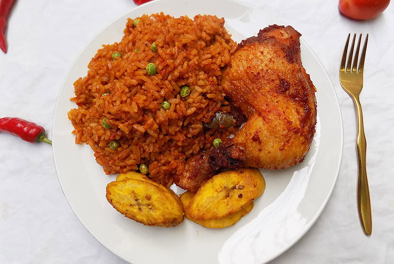
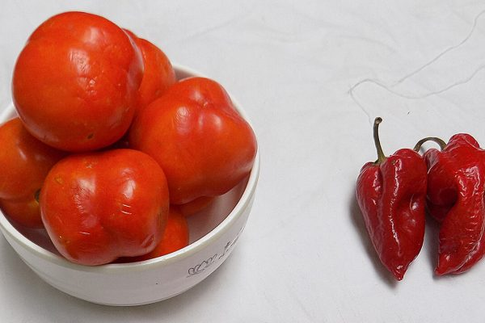
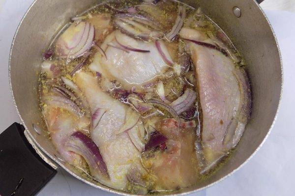
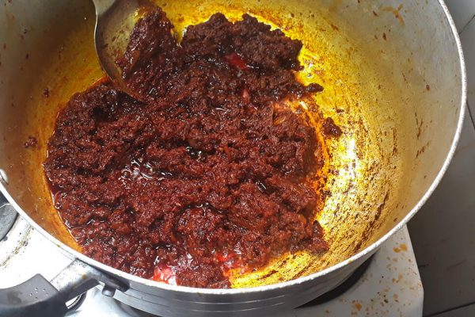
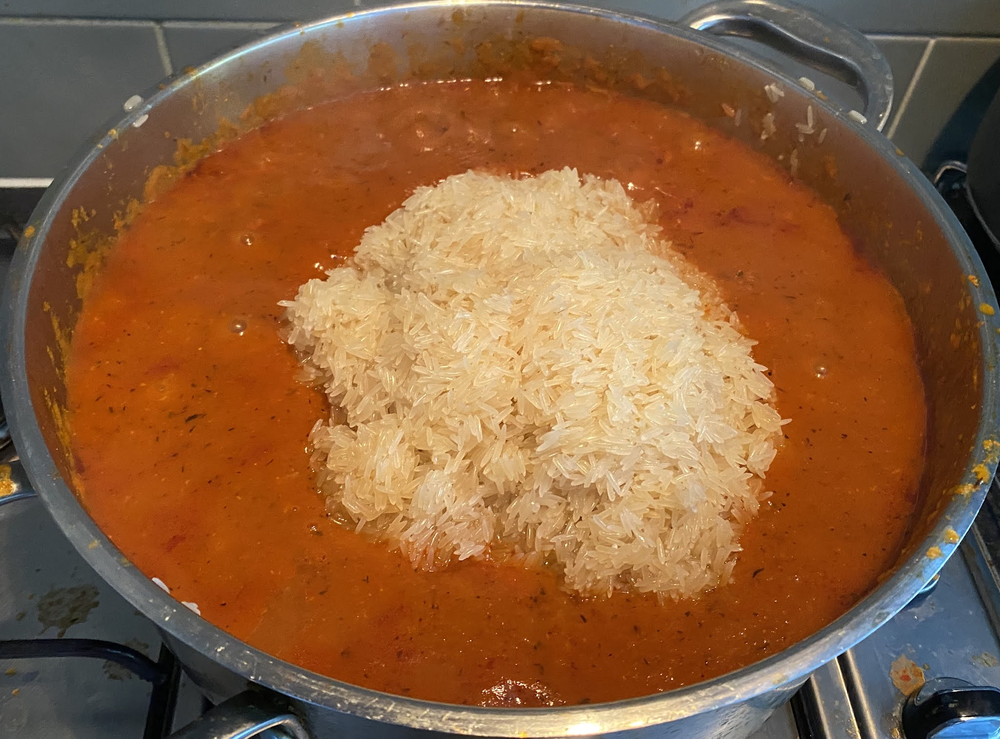
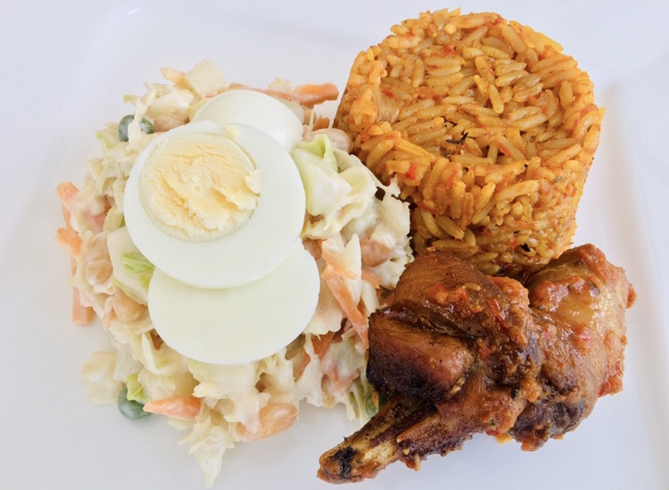

Jo3l Jollof Rice

Jollof Rice
Jollof Rice is one of the most popular dishes in Nigeria and in Africa as a whole.
I want to show you how to cook Nigerian Jollof Rice, the exact way I do it
in my kitchen, hence the name Jo3l Jollof Rice. If you can lay your hands on the right
ingredients and follow my recipe, you will have it ready in just few minutes.
What are the secret ingredients to making Jo3l Jollof rice? I have made a list below. Spices like curry and thyme are quite unique in
the making of Jo3l Jollof rice.
Jo3l Jollof Rice Ingredients
- 2 cups of rice
- 0.5kg Chicken
- 500ml of Ground Fresh red tomatoes
- 25ml Ground shomno/tatashe peppers
- Fresh red pepper to taste
- 1 Teaspoon Curry powder
- 1 Teaspoon Thyme
- 1 Teaspon Nutmeg powder
- 2 Seasoning cubes(Maggi to be precise)
- 2 Cups of Sliced Onions
- 150ml Vegetable Oil
- 2 Cloves of garlic
- 2 Fingers of ginger
- Salt to taste
Instructions:

- Wash and ensure the tomatoes are clean, mix with the frsh red pepper and blend, then set aside.
- Wash the chicken and precook: (Meat or Chicken can be used) Precook using a teaspoon each of ginger and garlic powder
, 2 seasoning cubes, a teaspoon of chicken seasoning spice, half a cup of lsiced onions and a teaspoon of salt.
Add one cup of water and allow it to sit and marinate for 20 - 60 mins.

Cook the meat till it becomes soft, using a kitchen fork, pick out the meat and set aside, set aside the water as well (this would be used later on)
You can choose to fry or grill the chicken after
- Wash and parboil your rice: Boil about 4 cups of water in a pot and add the 2
cups of rice and allow to boil for about 5 minutes. Then pour out and rinse with clean cold water, then set aside in a plastic sieve.
- Add Oil to a pot and fry one cup of sliced onions and stir for about 2-3 minutes and then add the ground tomatoes.
Frying the tomatoes would take about 15 minutes. Fry until you notice the tomatoes turning dark like in the image below

- Once the tomato is well fried, add the meat water to the fried tomato in the pot and a teaspoon of curry and thyme, two twaspoons of salt
and then add 3 cups of water and a seasoning cube
- Stir, taste for salt, you can add a littlemore. it should taste overly spiced and then add the rice. (the rice will absorb the excesses)
- Cover the pot and let the jollof rice cook till it becomes soft for human consumption, remember that you can add water occasionally.

Let it dry properly and then feel free to serve with the fried or grilled chicken or meat, salad and a drink of your choice.

With this you should be able to prepare your own Jo3l Jollof Rice. Thanks for Reading.